Chapter IV
The Rabbit Sends in a Little Bill
It was the White Rabbit, trotting slowly back again, and looking anxiously about as it went, as if it had lost something; and she heard it muttering to itself 'The Duchess! The Duchess! Oh my dear paws! Oh my fur and whiskers! She'll get me executed, as sure as ferrets are ferrets! Where can I have dropped them, I wonder?' Alice guessed in a moment that it was looking for the fan and the pair of white kid gloves, and she very good-naturedly began hunting about for them, but they were nowhere to be seen—everything seemed to have changed since her swim in the pool, and the great hall, with the glass table and the little door, had vanished completely.
Very soon the Rabbit noticed Alice, as she went hunting about, and called out to her in an angry tone, 'Why, Mary Ann, what are you doing out here? Run home this moment, and fetch me a pair of gloves and a fan! Quick, now!' And Alice was so much frightened that she ran off at once in the direction it pointed to, without trying to explain the mistake it had made.
'He took me for his housemaid,' she said to herself as she ran. 'How surprised he'll be when he finds out who I am! But I'd better take him his fan and gloves—that is, if I can find them.' As she said this, she came upon a neat little house, on the door of which was a bright brass plate with the name 'W. RABBIT' engraved upon it. She went in without knocking, and hurried upstairs, in great fear lest she should meet the real Mary Ann, and be turned out of the house before she had found the fan and gloves.
'How queer it seems,' Alice said to herself, 'to be going messages for a rabbit! I suppose Dinah'll be sending me on messages next!' And she began fancying the sort of thing that would happen: '“Miss Alice! Come here directly, and get ready for your walk!” “Coming in a minute, nurse! But I've got to see that the mouse doesn't get out.” Only I don't think,' Alice went on, 'that they'd let Dinah stop in the house if it began ordering people about like that!'
By this time she had found her way into a tidy little room with a table in the window, and on it (as she had hoped) a fan and two or three pairs of tiny white kid gloves: she took up the fan and a pair of the gloves, and was just going to leave the room, when her eye fell upon a little bottle that stood near the looking-glass. There was no label this time with the words 'DRINK ME,' but nevertheless she uncorked it and put it to her lips. 'I know something interesting is sure to happen,' she said to herself, 'whenever I eat or drink anything; so I'll just see what this bottle does. I do hope it'll make me grow large again, for really I'm quite tired of being such a tiny little thing!'
It did so indeed, and much sooner than she had expected: before she had drunk half the bottle, she found her head pressing against the ceiling, and had to stoop to save her neck from being broken. She hastily put down the bottle, saying to herself 'That's quite enough—I hope I shan't grow any more—As it is, I can't get out at the door—I do wish I hadn't drunk quite so much!'
Alas! it was too late to wish that! She went on growing, and growing, and very soon had to kneel down on the floor: in another minute there was not even room for this, and she tried the effect of lying down with one elbow against the door, and the other arm curled round her head. Still she went on growing, and, as a last resource, she put one arm out of the window, and one foot up the chimney, and said to herself 'Now I can do no more, whatever happens. What will become of me?'
Luckily for Alice, the little magic bottle had now had its full effect, and she grew no larger: still it was very uncomfortable, and, as there seemed to be no sort of chance of her ever getting out of the room again, no wonder she felt unhappy.
'It was much pleasanter at home,' thought poor Alice, 'when one wasn't always growing larger and smaller, and being ordered about by mice and rabbits. I almost wish I hadn't gone down that rabbit-hole—and yet—and yet—it's rather curious, you know, this sort of life! I do wonder what can have happened to me! When I used to read fairy-tales, I fancied that kind of thing never happened, and now here I am in the middle of one! There ought to be a book written about me, that there ought! And when I grow up, I'll write one—but I'm grown up now,' she added in a sorrowful tone; 'at least there's no room to grow up any more here.'
'But then,' thought Alice, 'shall I never get any older than I am now? That'll be a comfort, one way—never to be an old woman—but then—always to have lessons to learn! Oh, I shouldn't like that!'
'Oh, you foolish Alice!' she answered herself. 'How can you learn lessons in here? Why, there's hardly room for you, and no room at all for any lesson-books!' And so she went on, taking first one side and then the other, and making quite a conversation of it altogether; but after a few minutes she heard a voice outside, and stopped to listen.
'Mary Ann! Mary Ann!' said the voice. 'Fetch me my gloves this moment!' Then came a little pattering of feet on the stairs. Alice knew it was the Rabbit coming to look for her, and she trembled till she shook the house, quite forgetting that she was now about a thousand times as large as the Rabbit, and had no reason to be afraid of it.
Presently the Rabbit came up to the door, and tried to open it; but, as the door opened inwards, and Alice's elbow was pressed hard against it, that attempt proved a failure. Alice heard it say to itself 'Then I'll go round and get in at the window.'
'That you won't' thought Alice, and, after waiting till she fancied she heard the Rabbit just under the window, she suddenly spread out her hand, and made a snatch in the air. She did not get hold of anything, but she heard a little shriek and a fall, and a crash of broken glass, from which she concluded that it was just possible it had fallen into a cucumber-frame, or something of the sort.
'Digging for apples, indeed!' said the Rabbit angrily. 'Here! Come and help me out of this!' (Sounds of more broken glass.)
'Now tell me, Pat, what's that in the window?'
'Sure, it's an arm, yer honour!' (He pronounced it 'arrum.')
'An arm, you goose! Who ever saw one that size? Why, it fills the whole window!'
'Sure, it does, yer honour: but it's an arm for all that.'
'Well, it's got no business there, at any rate: go and take it away!'
There was a long silence after this, and Alice could only hear whispers now and then; such as, 'Sure, I don't like it, yer honour, at all, at all!' 'Do as I tell you, you coward!' and at last she spread out her hand again, and made another snatch in the air. This time there were two little shrieks, and more sounds of broken glass. 'What a number of cucumber-frames there must be!' thought Alice. 'I wonder what they'll do next! As for pulling me out of the window, I only wish they could! I'm sure I don't want to stay in here any longer!'
She waited for some time without hearing anything more: at last came a rumbling of little cartwheels, and the sound of a good many voices all talking together: she made out the words: 'Where's the other ladder?—Why, I hadn't to bring but one; Bill's got the other—Bill! fetch it here, lad!—Here, put 'em up at this corner—No, tie 'em together first—they don't reach half high enough yet—Oh! they'll do well enough; don't be particular—Here, Bill! catch hold of this rope—Will the roof bear?—Mind that loose slate—Oh, it's coming down! Heads below!' (a loud crash)—'Now, who did that?—It was Bill, I fancy—Who's to go down the chimney?—Nay, I shan't! You do it!—That I won't, then!—Bill's to go down—Here, Bill! the master says you're to go down the chimney!'
'Oh! So Bill's got to come down the chimney, has he?' said Alice to herself. 'Shy, they seem to put everything upon Bill! I wouldn't be in Bill's place for a good deal: this fireplace is narrow, to be sure; but I think I can kick a little!'
She drew her foot as far down the chimney as she could, and waited till she heard a little animal (she couldn't guess of what sort it was) scratching and scrambling about in the chimney close above her: then, saying to herself 'This is Bill,' she gave one sharp kick, and waited to see what would happen next.
The first thing she heard was a general chorus of 'There goes Bill!' then the Rabbit's voice along—'Catch him, you by the hedge!' then silence, and then another confusion of voices—'Hold up his head—Brandy now—Don't choke him—How was it, old fellow? What happened to you? Tell us all about it!'
Last came a little feeble, squeaking voice, ('That's Bill,' thought Alice,) 'Well, I hardly know—No more, thank ye; I'm better now—but I'm a deal too flustered to tell you—all I know is, something comes at me like a Jack-in-the-box, and up I goes like a sky-rocket!'
'So you did, old fellow!' said the others.
'We must burn the house down!' said the Rabbit's voice; and Alice called out as loud as she could, 'If you do. I'll set Dinah at you!'
There was a dead silence instantly, and Alice thought to herself, 'I wonder what they will do next! If they had any sense, they'd take the roof off.' After a minute or two, they began moving about again, and Alice heard the Rabbit say, 'A barrowful will do, to begin with.'
'A barrowful of what?' thought Alice; but she had not long to doubt, for the next moment a shower of little pebbles came rattling in at the window, and some of them hit her in the face. 'I'll put a stop to this,' she said to herself, and shouted out, 'You'd better not do that again!' which produced another dead silence.
Alice noticed with some surprise that the pebbles were all turning into little cakes as they lay on the floor, and a bright idea came into her head. 'If I eat one of these cakes,' she thought, 'it's sure to make some change in my size; and as it can't possibly make me larger, it must make me smaller, I suppose.'
So she swallowed one of the cakes, and was delighted to find that she began shrinking directly. As soon as she was small enough to get through the door, she ran out of the house, and found quite a crowd of little animals and birds waiting outside. The poor little Lizard, Bill, was in the middle, being held up by two guinea-pigs, who were giving it something out of a bottle. They all made a rush at Alice the moment she appeared; but she ran off as hard as she could, and soon found herself safe in a thick wood.
'The first thing I've got to do,' said Alice to herself, as she wandered about in the wood, 'is to grow to my right size again; and the second thing is to find my way into that lovely garden. I think that will be the best plan.'
It sounded an excellent plan, no doubt, and very neatly and simply arranged; the only difficulty was, that she had not the smallest idea how to set about it; and while she was peering about anxiously among the trees, a little sharp bark just over her head made her look up in a great hurry.
An enormous puppy was looking down at her with large round eyes, and feebly stretching out one paw, trying to touch her. 'Poor little thing!' said Alice, in a coaxing tone, and she tried hard to whistle to it; but she was terribly frightened all the time at the thought that it might be hungry, in which case it would be very likely to eat her up in spite of all her coaxing.
Hardly knowing what she did, she picked up a little bit of stick, and held it out to the puppy; whereupon the puppy jumped into the air off all its feet at once, with a yelp of delight, and rushed at the stick, and made believe to worry it; then Alice dodged behind a great thistle, to keep herself from being run over; and the moment she appeared on the other side, the puppy made another rush at the stick, and tumbled head over heels in its hurry to get hold of it; then Alice, thinking it was very like having a game of play with a cart-horse, and expecting every moment to be trampled under its feet, ran round the thistle again; then the puppy began a series of short charges at the stick, running a very little way forwards each time and a long way back, and barking hoarsely all the while, till at last it sat down a good way off, panting, with its tongue hanging out of its mouth, and its great eyes half shut.
This seemed to Alice a good opportunity for making her escape; so she set off at once, and ran till she was quite tired and out of breath, and till the puppy's bark sounded quite faint in the distance. 'And yet what a dear little puppy it was!' said Alice, as she leant against a buttercup to rest herself, and fanned herself with one of the leaves: 'I should have liked teaching it tricks very much, if—if I'd only been the right size to do it! Oh dear! I'd nearly forgotten that I've got to grow up again! Let me see—how is it to be managed? I suppose I ought to eat or drink something or other; but the great question is, what?'
The great question certainly was, what? Alice looked all round her at the flowers and the blades of grass, but she did not see anything that looked like the right thing to eat or drink under the circumstances. There was a large mushroom growing near her, about the same height as herself; and when she had looked under it, and on both sides of it, and behind it, it occurred to her that she might as well look and see what was on the top of it.
She stretched herself up on tiptoe, and peeped over the edge of the mushroom, and her eyes immediately met those of a large caterpillar, that was sitting on the top with its arms folded, quietly smoking a long hookah, and taking not the smallest notice of her or of anything else.
Chapter V
Advice from a Caterpillar
The Caterpillar and Alice looked at each other for some time in silence: at last the Caterpillar took the hookah out of its mouth, and addressed her in a languid, sleepy voice. 'Who are you?' said the Caterpillar.
This was not an encouraging opening for a conversation. Alice replied, rather shyly, 'I—I hardly know, sir, just at present—at least I know who I was when I got up this morning, but I think I must have been changed several times since then.'
'What do you mean by that?' said the Caterpillar sternly. 'Explain yourself!'
'I can't explain myself, I'm afraid, sir' said Alice, 'because I'm not myself, you see.'
'I don't see,' said the Caterpillar.
'I'm afraid I can't put it more clearly,' Alice replied very politely, 'for I can't understand it myself to begin with; and being so many different sizes in a day is very confusing.'
'It isn't,' said the Caterpillar.
'Well, perhaps you haven't found it so yet,' said Alice; 'but when you have to turn into a chrysalis—you will some day, you know—and then after that into a butterfly, I should think you'll feel it a little queer, won't you?'
'Not a bit,' said the Caterpillar.
'Well, perhaps your feelings may be different,' said Alice; 'all I know is, it would feel very queer to me.'
'You!' said the Caterpillar contemptuously. 'Who are you?'
Which brought them back again to the beginning of the conversation. Alice felt a little irritated at the Caterpillar's making such very short remarks, and she drew herself up and said, very gravely, 'I think, you ought to tell me who you are, first.'
'Why?' said the Caterpillar.
Here was another puzzling question; and as Alice could not think of any good reason, and as the Caterpillar seemed to be in a very unpleasant state of mind, she turned away.
'Come back!' the Caterpillar called after her. 'I've something important to say!'
This sounded promising, certainly: Alice turned and came back again.
'Keep your temper,' said the Caterpillar.
'Is that all?' said Alice, swallowing down her anger as well as she could.
'No,' said the Caterpillar.
Alice thought she might as well wait, as she had nothing else to do, and perhaps after all it might tell her something worth hearing. For some minutes it puffed away without speaking, but at last it unfolded its arms, took the hookah out of its mouth again, and said, 'So you think you're changed, do you?'
'I'm afraid I am, sir,' said Alice; 'I can't remember things as I used—and I don't keep the same size for ten minutes together!'
'Can't remember what things?' said the Caterpillar.
'Well, I've tried to say “How doth the little busy bee,” but it all came different!' Alice replied in a very melancholy voice.
'Repeat, “You are old, Father William,”' said the Caterpillar.
Alice folded her hands, and began:—
'You are old, Father William,' the young man said, 'And your hair has become very white; And yet you incessantly stand on your head— Do you think, at your age, it is right?'
'In my youth,' Father William replied to his son, 'I feared it might injure the brain; But, now that I'm perfectly sure I have none, Why, I do it again and again.'
'You are old,' said the youth, 'as I mentioned before, And have grown most uncommonly fat; Yet you turned a back-somersault in at the door— Pray, what is the reason of that?'
'In my youth,' said the sage, as he shook his grey locks, 'I kept all my limbs very supple By the use of this ointment—one shilling the box— Allow me to sell you a couple?'
'You are old,' said the youth, 'and your jaws are too weak For anything tougher than suet; Yet you finished the goose, with the bones and the beak— Pray how did you manage to do it?'
'In my youth,' said his father, 'I took to the law, And argued each case with my wife; And the muscular strength, which it gave to my jaw, Has lasted the rest of my life.'
'You are old,' said the youth, 'one would hardly suppose That your eye was as steady as ever; Yet you balanced an eel on the end of your nose— What made you so awfully clever?'
'I have answered three questions, and that is enough,' Said his father; 'don't give yourself airs! Do you think I can listen all day to such stuff? Be off, or I'll kick you down stairs!'
'That is not said right,' said the Caterpillar.
'Not quite right, I'm afraid,' said Alice, timidly; 'some of the words have got altered.'
'It is wrong from beginning to end,' said the Caterpillar decidedly, and there was silence for some minutes.
The Caterpillar was the first to speak.
'What size do you want to be?' it asked.
'Oh, I'm not particular as to size,' Alice hastily replied; 'only one doesn't like changing so often, you know.'
'I don't know,' said the Caterpillar.
Alice said nothing: she had never been so much contradicted in her life before, and she felt that she was losing her temper.
'Are you content now?' said the Caterpillar.
'Well, I should like to be a little larger, sir, if you wouldn't mind,' said Alice: 'three inches is such a wretched height to be.'
'It is a very good height indeed!' said the Caterpillar angrily, rearing itself upright as it spoke (it was exactly three inches high).
'But I'm not used to it!' pleaded poor Alice in a piteous tone. And she thought of herself, 'I wish the creatures wouldn't be so easily offended!'
'You'll get used to it in time,' said the Caterpillar; and it put the hookah into its mouth and began smoking again.
This time Alice waited patiently until it chose to speak again. In a minute or two the Caterpillar took the hookah out of its mouth and yawned once or twice, and shook itself. Then it got down off the mushroom, and crawled away in the grass, merely remarking as it went, 'One side will make you grow taller, and the other side will make you grow shorter.'
'One side of what? The other side of what?' thought Alice to herself.
'Of the mushroom,' said the Caterpillar, just as if she had asked it aloud; and in another moment it was out of sight.
Alice remained looking thoughtfully at the mushroom for a minute, trying to make out which were the two sides of it; and as it was perfectly round, she found this a very difficult question. However, at last she stretched her arms round it as far as they would go, and broke off a bit of the edge with each hand.
'And now which is which?' she said to herself, and nibbled a little of the right-hand bit to try the effect: the next moment she felt a violent blow underneath her chin: it had struck her foot!
She was a good deal frightened by this very sudden change, but she felt that there was no time to be lost, as she was shrinking rapidly; so she set to work at once to eat some of the other bit. Her chin was pressed so closely against her foot, that there was hardly room to open her mouth; but she did it at last, and managed to swallow a morsel of the lefthand bit.
* * * * * * *
* * * * * *
* * * * * * *
'Come, my head's free at last!' said Alice in a tone of delight, which changed into alarm in another moment, when she found that her shoulders were nowhere to be found: all she could see, when she looked down, was an immense length of neck, which seemed to rise like a stalk out of a sea of green leaves that lay far below her.
'What can all that green stuff be?' said Alice. 'And where have my shoulders got to? And oh, my poor hands, how is it I can't see you?' She was moving them about as she spoke, but no result seemed to follow, except a little shaking among the distant green leaves.
As there seemed to be no chance of getting her hands up to her head, she tried to get her head down to them, and was delighted to find that her neck would bend about easily in any direction, like a serpent. She had just succeeded in curving it down into a graceful zigzag, and was going to dive in among the leaves, which she found to be nothing but the tops of the trees under which she had been wandering, when a sharp hiss made her draw back in a hurry: a large pigeon had flown into her face, and was beating her violently with its wings.
'Serpent!' screamed the Pigeon.
'I'm not a serpent!' said Alice indignantly. 'Let me alone!'
'Serpent, I say again!' repeated the Pigeon, but in a more subdued tone, and added with a kind of sob, 'I've tried every way, and nothing seems to suit them!'
'I haven't the least idea what you're talking about,' said Alice.
'I've tried the roots of trees, and I've tried banks, and I've tried hedges,' the Pigeon went on, without attending to her; 'but those serpents! There's no pleasing them!'
Alice was more and more puzzled, but she thought there was no use in saying anything more till the Pigeon had finished.
'As if it wasn't trouble enough hatching the eggs,' said the Pigeon; 'but I must be on the look-out for serpents night and day! Why, I haven't had a wink of sleep these three weeks!'
'I'm very sorry you've been annoyed,' said Alice, who was beginning to see its meaning.
'And just as I'd taken the highest tree in the wood,' continued the Pigeon, raising its voice to a shriek, 'and just as I was thinking I should be free of them at last, they must needs come wriggling down from the sky! Ugh, Serpent!'
'But I'm not a serpent, I tell you!' said Alice. 'I'm a—I'm a—'
'Well! What are you?' said the Pigeon. 'I can see you're trying to invent something!'
'I—I'm a little girl,' said Alice, rather doubtfully, as she remembered the number of changes she had gone through that day.
'A likely story indeed!' said the Pigeon in a tone of the deepest contempt. 'I've seen a good many little girls in my time, but never one with such a neck as that! No, no! You're a serpent; and there's no use denying it. I suppose you'll be telling me next that you never tasted an egg!'
'I have tasted eggs, certainly,' said Alice, who was a very truthful child; 'but little girls eat eggs quite as much as serpents do, you know.'
'I don't believe it,' said the Pigeon; 'but if they do, why then they're a kind of serpent, that's all I can say.'
This was such a new idea to Alice, that she was quite silent for a minute or two, which gave the Pigeon the opportunity of adding, 'You're looking for eggs, I know that well enough; and what does it matter to me whether you're a little girl or a serpent?'
'It matters a good deal to me,' said Alice hastily; 'but I'm not looking for eggs, as it happens; and if I was, I shouldn't want yours: I don't like them raw.'
'Well, be off, then!' said the Pigeon in a sulky tone, as it settled down again into its nest. Alice crouched down among the trees as well as she could, for her neck kept getting entangled among the branches, and every now and then she had to stop and untwist it. After a while she remembered that she still held the pieces of mushroom in her hands, and she set to work very carefully, nibbling first at one and then at the other, and growing sometimes taller and sometimes shorter, until she had succeeded in bringing herself down to her usual height.
It was so long since she had been anything near the right size, that it felt quite strange at first; but she got used to it in a few minutes, and began talking to herself, as usual. 'Come, there's half my plan done now! How puzzling all these changes are! I'm never sure what I'm going to be, from one minute to another! However, I've got back to my right size: the next thing is, to get into that beautiful garden—how is that to be done, I wonder?' As she said this, she came suddenly upon an open place, with a little house in it about four feet high. 'Whoever lives there,' thought Alice, 'it'll never do to come upon them this size: why, I should frighten them out of their wits!' So she began nibbling at the righthand bit again, and did not venture to go near the house till she had brought herself down to nine inches high.
Chapter VI
Pig and Pepper
For a minute or two she stood looking at the house, and wondering what to do next, when suddenly a footman in livery came running out of the wood—(she considered him to be a footman because he was in livery: otherwise, judging by his face only, she would have called him a fish)—and rapped loudly at the door with his knuckles. It was opened by another footman in livery, with a round face, and large eyes like a frog; and both footmen, Alice noticed, had powdered hair that curled all over their heads. She felt very curious to know what it was all about, and crept a little way out of the wood to listen.
The Fish-Footman began by producing from under his arm a great letter, nearly as large as himself, and this he handed over to the other, saying, in a solemn tone, 'For the Duchess. An invitation from the Queen to play croquet.' The Frog-Footman repeated, in the same solemn tone, only changing the order of the words a little, 'From the Queen. An invitation for the Duchess to play croquet.'
Then they both bowed low, and their curls got entangled together.
Alice laughed so much at this, that she had to run back into the wood for fear of their hearing her; and when she next peeped out the Fish-Footman was gone, and the other was sitting on the ground near the door, staring stupidly up into the sky.
Alice went timidly up to the door, and knocked.
'There's no sort of use in knocking,' said the Footman, 'and that for two reasons. First, because I'm on the same side of the door as you are; secondly, because they're making such a noise inside, no one could possibly hear you.' And certainly there was a most extraordinary noise going on within—a constant howling and sneezing, and every now and then a great crash, as if a dish or kettle had been broken to pieces.
'Please, then,' said Alice, 'how am I to get in?'
'There might be some sense in your knocking,' the Footman went on without attending to her, 'if we had the door between us. For instance, if you were inside, you might knock, and I could let you out, you know.' He was looking up into the sky all the time he was speaking, and this Alice thought decidedly uncivil. 'But perhaps he can't help it,' she said to herself; 'his eyes are so very nearly at the top of his head. But at any rate he might answer questions.—How am I to get in?' she repeated, aloud.
'I shall sit here,' the Footman remarked, 'till tomorrow—'
At this moment the door of the house opened, and a large plate came skimming out, straight at the Footman's head: it just grazed his nose, and broke to pieces against one of the trees behind him. '—or next day, maybe,' the Footman continued in the same tone, exactly as if nothing had happened.
'How am I to get in?' asked Alice again, in a louder tone.
'Are you to get in at all?' said the Footman. 'That's the first question, you know.'
It was, no doubt: only Alice did not like to be told so. 'It's really dreadful,' she muttered to herself, 'the way all the creatures argue. It's enough to drive one crazy!'
The Footman seemed to think this a good opportunity for repeating his remark, with variations. 'I shall sit here,' he said, 'on and off, for days and days.'
'But what am I to do?' said Alice.
'Anything you like,' said the Footman, and began whistling.
'Oh, there's no use in talking to him,' said Alice desperately: 'he's perfectly idiotic!' And she opened the door and went in.
The door led right into a large kitchen, which was full of smoke from one end to the other: the Duchess was sitting on a three-legged stool in the middle, nursing a baby; the cook was leaning over the fire, stirring a large cauldron which seemed to be full of soup.
'There's certainly too much pepper in that soup!' Alice said to herself, as well as she could for sneezing.
There was certainly too much of it in the air. Even the Duchess sneezed occasionally; and as for the baby, it was sneezing and howling alternately without a moment's pause. The only things in the kitchen that did not sneeze, were the cook, and a large cat which was sitting on the hearth and grinning from ear to ear.
'Please would you tell me,' said Alice, a little timidly, for she was not quite sure whether it was good manners for her to speak first, 'why your cat grins like that?'
'It's a Cheshire cat,' said the Duchess, 'and that's why. Pig!'
She said the last word with such sudden violence that Alice quite jumped; but she saw in another moment that it was addressed to the baby, and not to her, so she took courage, and went on again:—
'I didn't know that Cheshire cats always grinned; in fact, I didn't know that cats could grin.'
'They all can,' said the Duchess; 'and most of 'em do.'
'I don't know of any that do,' Alice said very politely, feeling quite pleased to have got into a conversation.
'You don't know much,' said the Duchess; 'and that's a fact.'
Alice did not at all like the tone of this remark, and thought it would be as well to introduce some other subject of conversation. While she was trying to fix on one, the cook took the cauldron of soup off the fire, and at once set to work throwing everything within her reach at the Duchess and the baby—the fire-irons came first; then followed a shower of saucepans, plates, and dishes. The Duchess took no notice of them even when they hit her; and the baby was howling so much already, that it was quite impossible to say whether the blows hurt it or not.
'Oh, please mind what you're doing!' cried Alice, jumping up and down in an agony of terror. 'Oh, there goes his precious nose'; as an unusually large saucepan flew close by it, and very nearly carried it off.
'If everybody minded their own business,' the Duchess said in a hoarse growl, 'the world would go round a deal faster than it does.'
'Which would not be an advantage,' said Alice, who felt very glad to get an opportunity of showing off a little of her knowledge. 'Just think of what work it would make with the day and night! You see the earth takes twenty-four hours to turn round on its axis—'
'Talking of axes,' said the Duchess, 'chop off her head!'
Alice glanced rather anxiously at the cook, to see if she meant to take the hint; but the cook was busily stirring the soup, and seemed not to be listening, so she went on again: 'Twenty-four hours, I think; or is it twelve? I—'
'Oh, don't bother me,' said the Duchess; 'I never could abide figures!' And with that she began nursing her child again, singing a sort of lullaby to it as she did so, and giving it a violent shake at the end of every line:
'Speak roughly to your little boy, And beat him when he sneezes: He only does it to annoy, Because he knows it teases.'
CHORUS.
(In which the cook and the baby joined):—
'Wow! wow! wow!'
While the Duchess sang the second verse of the song, she kept tossing the baby violently up and down, and the poor little thing howled so, that Alice could hardly hear the words:—
'I speak severely to my boy, I beat him when he sneezes; For he can thoroughly enjoy The pepper when he pleases!'
CHORUS.
'Wow! wow! wow!'
'Here! you may nurse it a bit, if you like!' the Duchess said to Alice, flinging the baby at her as she spoke. 'I must go and get ready to play croquet with the Queen,' and she hurried out of the room. The cook threw a frying-pan after her as she went out, but it just missed her.
Alice caught the baby with some difficulty, as it was a queer-shaped little creature, and held out its arms and legs in all directions, 'just like a star-fish,' thought Alice. The poor little thing was snorting like a steam-engine when she caught it, and kept doubling itself up and straightening itself out again, so that altogether, for the first minute or two, it was as much as she could do to hold it.
As soon as she had made out the proper way of nursing it, (which was to twist it up into a sort of knot, and then keep tight hold of its right ear and left foot, so as to prevent its undoing itself,) she carried it out into the open air. 'If I don't take this child away with me,' thought Alice, 'they're sure to kill it in a day or two: wouldn't it be murder to leave it behind?' She said the last words out loud, and the little thing grunted in reply (it had left off sneezing by this time). 'Don't grunt,' said Alice; 'that's not at all a proper way of expressing yourself.'
The baby grunted again, and Alice looked very anxiously into its face to see what was the matter with it. There could be no doubt that it had a very turn-up nose, much more like a snout than a real nose; also its eyes were getting extremely small for a baby: altogether Alice did not like the look of the thing at all. 'But perhaps it was only sobbing,' she thought, and looked into its eyes again, to see if there were any tears.
No, there were no tears. 'If you're going to turn into a pig, my dear,' said Alice, seriously, 'I'll have nothing more to do with you. Mind now!' The poor little thing sobbed again (or grunted, it was impossible to say which), and they went on for some while in silence.
Alice was just beginning to think to herself, 'Now, what am I to do with this creature when I get it home?' when it grunted again, so violently, that she looked down into its face in some alarm. This time there could be no mistake about it: it was neither more nor less than a pig, and she felt that it would be quite absurd for her to carry it further.
So she set the little creature down, and felt quite relieved to see it trot away quietly into the wood. 'If it had grown up,' she said to herself, 'it would have made a dreadfully ugly child: but it makes rather a handsome pig, I think.' And she began thinking over other children she knew, who might do very well as pigs, and was just saying to herself, 'if one only knew the right way to change them—' when she was a little startled by seeing the Cheshire Cat sitting on a bough of a tree a few yards off.
The Cat only grinned when it saw Alice. It looked good-natured, she thought: still it had very long claws and a great many teeth, so she felt that it ought to be treated with respect. 'Cheshire Puss,' she began, rather timidly, as she did not at all know whether it would like the name: however, it only grinned a little wider. 'Come, it's pleased so far,' thought Alice, and she went on. 'Would you tell me, please, which way I ought to go from here?'
'That depends a good deal on where you want to get to,' said the Cat.
'I don't much care where—' said Alice.
'Then it doesn't matter which way you go,' said the Cat.
'—so long as I get somewhere,' Alice added as an explanation.
'Oh, you're sure to do that,' said the Cat, 'if you only walk long enough.'
Alice felt that this could not be denied, so she tried another question. 'What sort of people live about here?'
'In that direction,' the Cat said, waving its right paw round, 'lives a Hatter: and in that direction,' waving the other paw, 'lives a March Hare. Visit either you like: they're both mad.'
'But I don't want to go among mad people,' Alice remarked.
'Oh, you can't help that,' said the Cat: 'we're all mad here. I'm mad. You're mad.'
'How do you know I'm mad?' said Alice.
'You must be,' said the Cat, 'or you wouldn't have come here.'
Alice didn't think that proved it at all; however, she went on 'And how do you know that you're mad?'
'To begin with,' said the Cat, 'a dog's not mad. You grant that?'
'I suppose so,' said Alice.
'Well, then,' the Cat went on, 'you see, a dog growls when it's angry, and wags its tail when it's pleased. Now I growl when I'm pleased, and wag my tail when I'm angry. Therefore I'm mad.'
'I call it purring, not growling,' said Alice.
'Call it what you like,' said the Cat. 'Do you play croquet with the Queen to-day?'
'I should like it very much,' said Alice, 'but I haven't been invited yet.'
'You'll see me there,' said the Cat, and vanished.
Alice was not much surprised at this, she was getting so used to queer things happening. While she was looking at the place where it had been, it suddenly appeared again.
'By-the-bye, what became of the baby?' said the Cat. 'I'd nearly forgotten to ask.'
'It turned into a pig,' Alice quietly said, just as if it had come back in a natural way.
'I thought it would,' said the Cat, and vanished again.
Alice waited a little, half expecting to see it again, but it did not appear, and after a minute or two she walked on in the direction in which the March Hare was said to live. 'I've seen hatters before,' she said to herself; 'the March Hare will be much the most interesting, and perhaps as this is May it won't be raving mad—at least not so mad as it was in March.' As she said this, she looked up, and there was the Cat again, sitting on a branch of a tree.
'Did you say pig, or fig?' said the Cat.
'I said pig,' replied Alice; 'and I wish you wouldn't keep appearing and vanishing so suddenly: you make one quite giddy.'
'All right,' said the Cat; and this time it vanished quite slowly, beginning with the end of the tail, and ending with the grin, which remained some time after the rest of it had gone.
'Well! I've often seen a cat without a grin,' thought Alice; 'but a grin without a cat! It's the most curious thing I ever saw in my life!'
She had not gone much farther before she came in sight of the house of the March Hare: she thought it must be the right house, because the chimneys were shaped like ears and the roof was thatched with fur. It was so large a house, that she did not like to go nearer till she had nibbled some more of the lefthand bit of mushroom, and raised herself to about two feet high: even then she walked up towards it rather timidly, saying to herself 'Suppose it should be raving mad after all! I almost wish I'd gone to see the Hatter instead!'
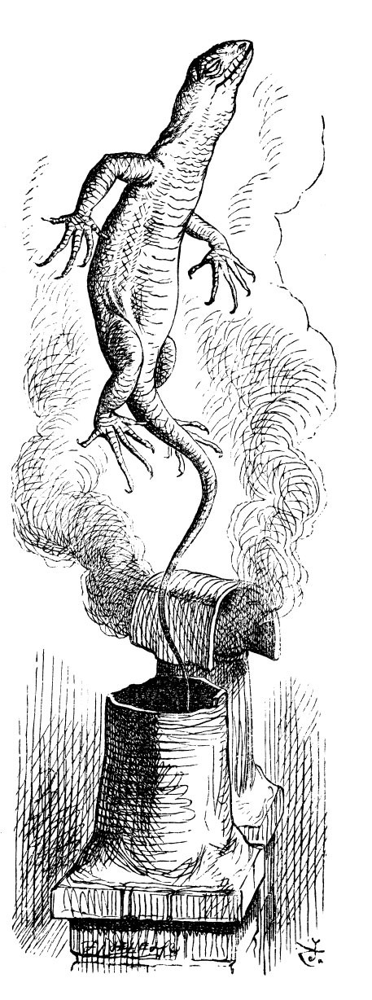 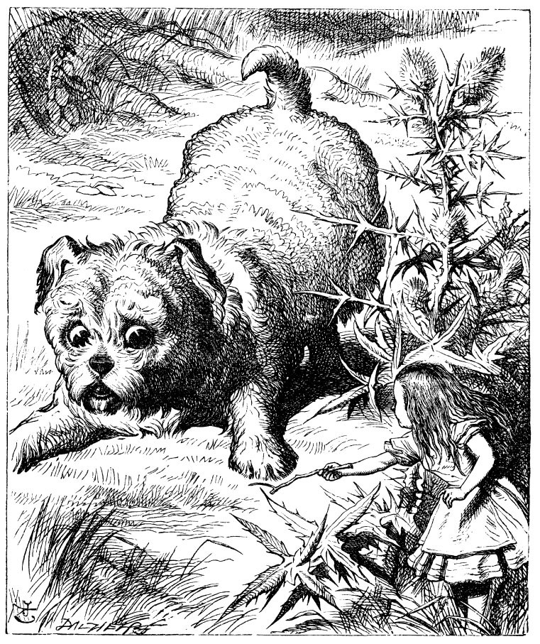
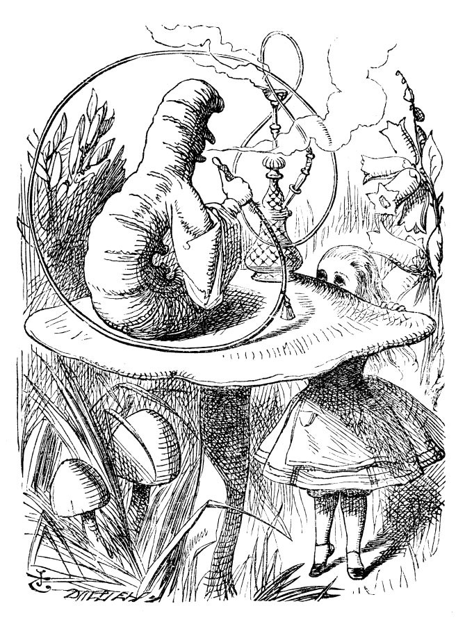 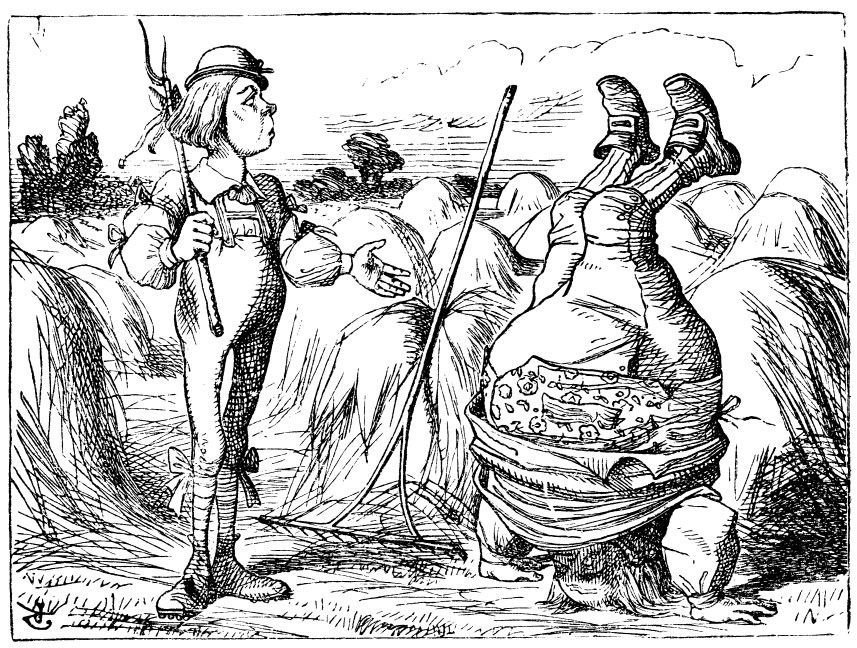 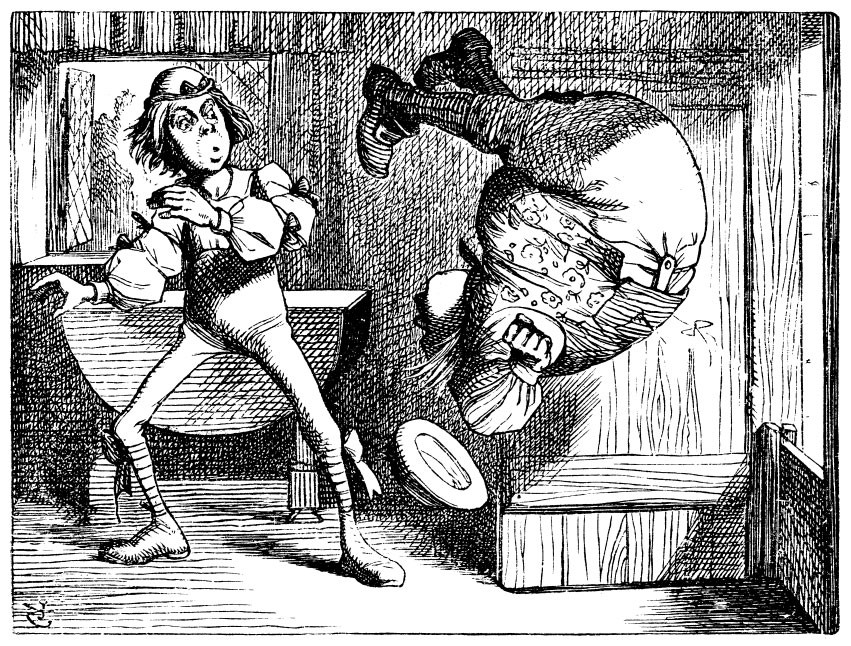 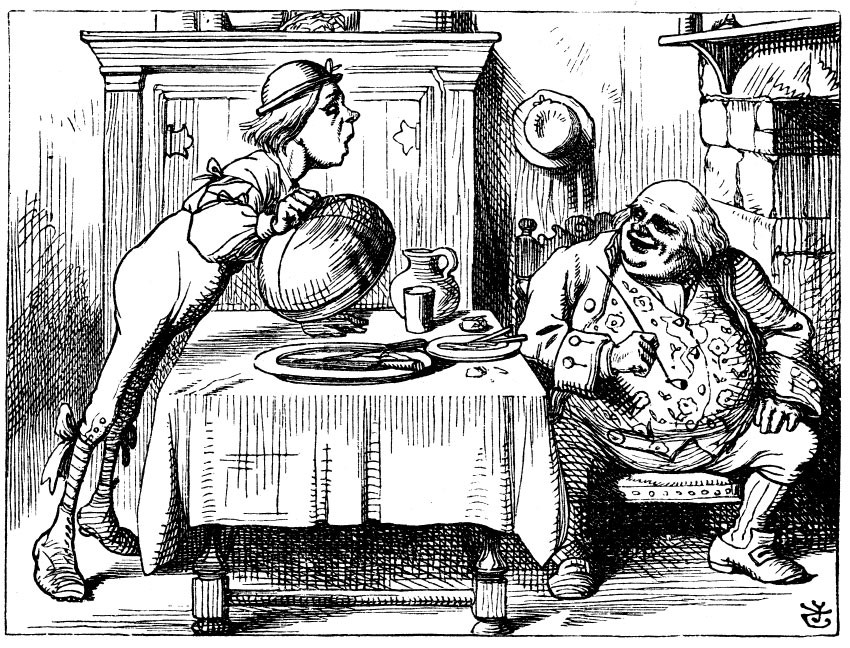 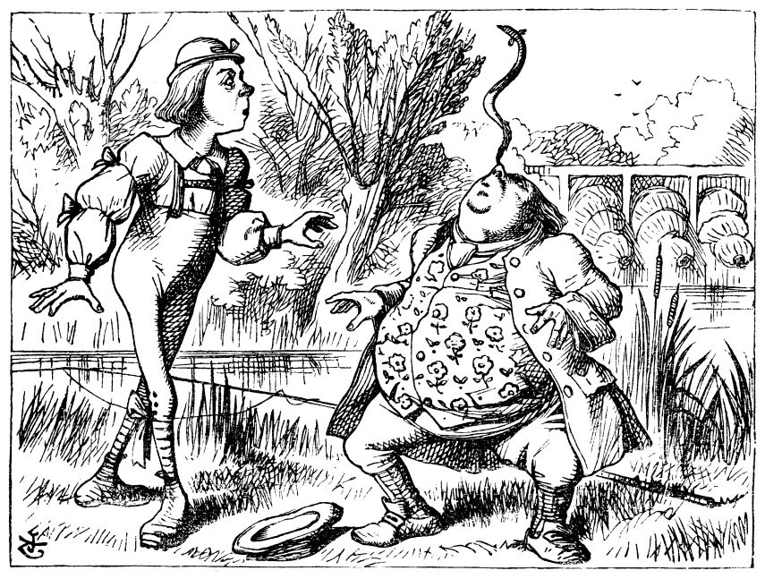
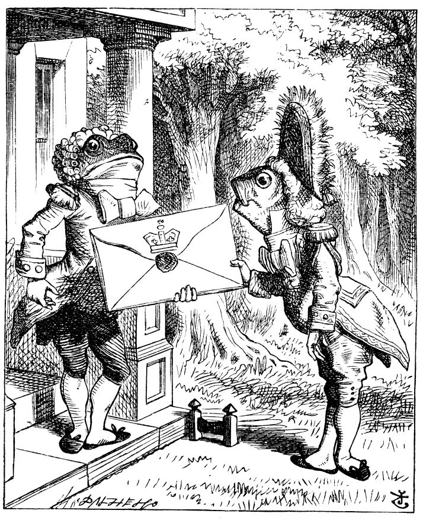 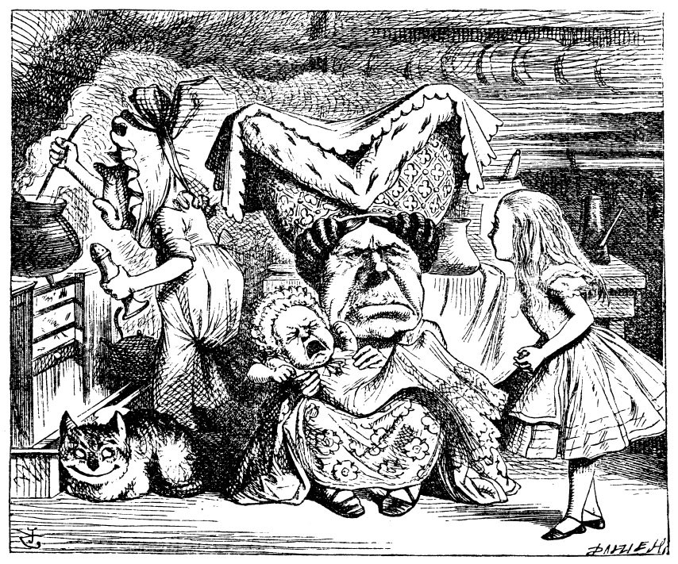 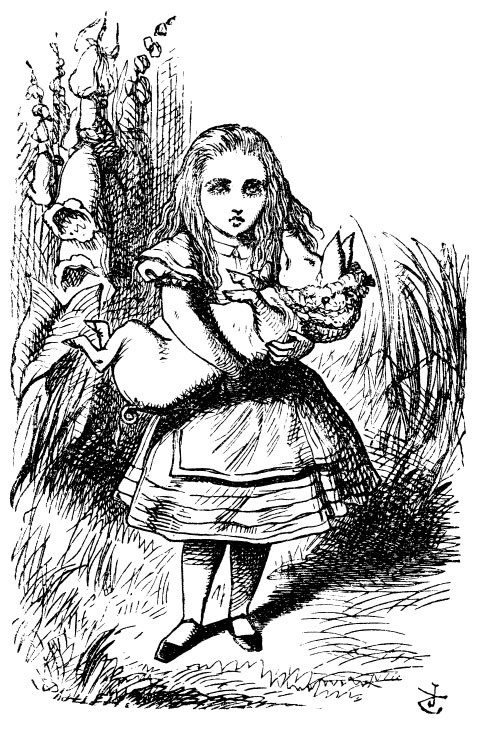
 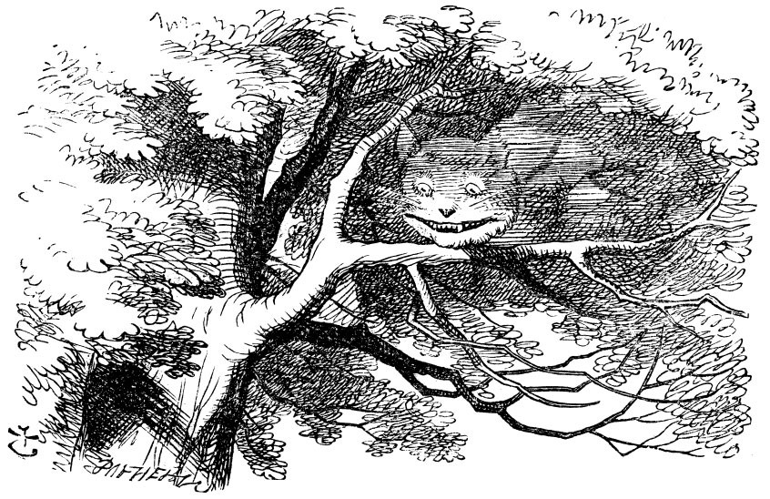
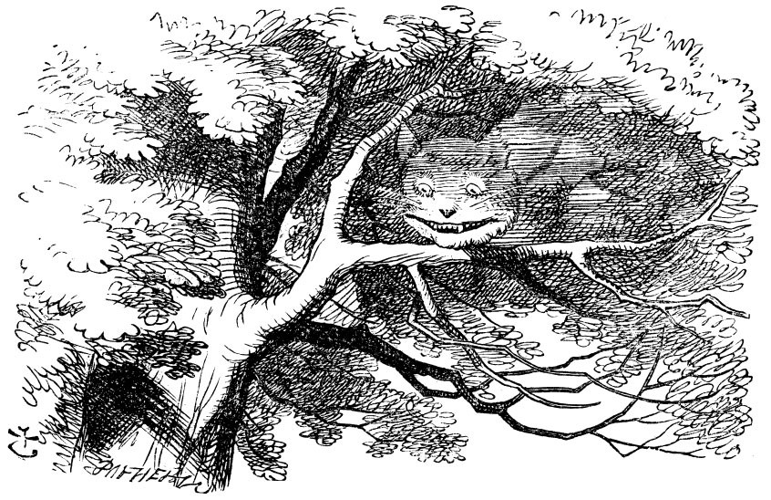